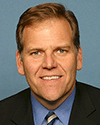
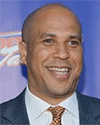
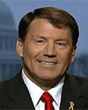

The current breakdown of the Senate is as follows (where we count the two independents as Democrats):
- 13 Democratic seats are up for (re)election in 2026 and 34 seats are not up, for a total of 47 seats
- 22 Republican seats are up for (re)election in 2026 and 31 seats are not up, for a total of 53 seats
The totals above include the special elections for the rest of the term for Sen. Marco Rubio (R-FL) ending Jan. 3, 2029 and Sen. J.D. Vance (R-OH), also ending on Jan. 3, 2029.
The map slightly favors the Republicans. because if no seats flip, the Republicans will hold their majority. The only incumbents potentially endangered are Sens. Susan Collins (R-ME) and Jon Husted (R-OH). However, multiple open seats are competitive.
The Democrats have a decent chance to beat Collins and former governor Roy Cooper has a good chance to win the open seat in North Carolina. That gets them to 51 seats. Former senator Sherrod Brown is running against the appointed Jon Husted. As a three-time winner, in a blue wave, Brown could his old job back. That gets the Democrats to 50 seats. The next one will be tough. Candidate states are Iowa (open seat), Florida (appointed senator), Texas (toxic Republican), and Alaska. Democrats also need to hold all their own seats, especially the open seat in Michigan.
The Democratic-held seats are listed first below, in alphabetical order by state, with the Republicans following.
Click on a picture for the candidate's webpage.
Click on a name for the candidate's entry in Wikipedia.
Click on a party (D) or (R) for the state party.
The indicates a race to watch.
All links open in a new window. Type CTRL-W in the window to close it (Command-W on a Mac).
Democratic-held seats
Colorado
| Incumbent | Challenger | Notes Polls |
|
John Hickenlooper (D) |
Mark Baisley (R) |
Colorado has ceased to be a swing state, so the former two-term governor will almost certainly become a two-term senator. John Hickenlooper had four primary opponents, but he has universal recognition in the state and he raised 15x more money than all his opponents combined. He won his primary easily. There are plenty of Republicans in libertarian Colorado, but none with a track record of winning three statewide elections. State Sen. Mark Baisley said he was willing to run and nobody else did, so he will be the Republican nominee. Hickenlooper will dispatch him easily. |
Delaware
| Incumbent | Challenger | Notes Polls |
|
Chris Coons (D) |
Michael Katz (R) |
Chris Coons had the pleasure of running against Christine "I am not a witch" O'Donnell in a 2010 special election to fill the Senate seat that was vacated by Joe Biden when he became Vice President. He has been around ever since and will continue to be until he decides to retire. However, if the Democrats capture the Senate, he will probably become chairman of the Senate Foreign Relations Committee. That is a very high-profile position. If he handles it well, he is a potential candidate for secretary of state in a Democratic administration in 2029. In November, he will crush Dr. Michael Katz, a former Delaware state senator. |
Georgia
| Incumbent | Challenger | Notes Polls |
|
Jon Ossoff (D) |
Mike Collins (R) |
This will be the one of the most watched races in 2026. Sen. Jon Ossoff (D-GA) dodged a bullet here when Gov. Brian Kemp (R-GA) said he will not challenge Ossoff, presumably so he can concentrate on running for president in 2028. Rep. Marjorie Taylor Greene (R-GA) would be an, er, interesting candidate, but she opted not to run. In the end, two Georgia representatives, Mike Collins and Buddy Carter got in. Finally, Kemp's choice, football coach Derek Dooley got in. Collins and Dooley made it to the runoff. Collins won and will face Ossoff. Ossoff has run a campaign more attacking Donald Trump than attacking Mike Collins. This has brought in boatloads of money from out of state. He is also leading in all the polls. The big question now is whether the NRSC will scrounge up $50 million to attack Ossoff and try to salvage Collins or just give up and spend the money in Alaska, Iowa, Ohio, and Texas. |
Illinois
| Challenger | Challenger | Notes Polls |
|
Juliana Stratton (D) |
Don Tracy (R) |
Dick Durbin is minority whip, the second most powerful position in the Senate Democratic caucus. He is also 80 years old and has decided that five terms in the Senate is enough. This started a feeding frenzy among Illinois Democrats. The first one in was Lt. Gov. (D-IL) Julianna Stratton (D-IL). She has the full (financial) backing of billionaire Gov. J.B. Pritzker (D-IL). The combination of her having already won statewide office and Pritzker's money made her the favorite and she won her primary handily. In very blue Illinois, she is a shoo-in in November. She will be the third Black Democratic woman in the Senate, along with Sens. Lisa Blunt Rochester (D-DE) and Angela Alsobrooks (D-MD). |
Massachusetts
| Incumbent | Challenger | Notes Polls |
|
Ed Markey (D) |
John Deaton (R) |
Massachusetts is a very blue state and Markey is a generic Democrat. He should be in like Flynn. However, he first has to win the Democratic primary now that Rep. Seth Moulton (D-MA) is challenging him. Moulton a 46-year-old veteran is challenging the 79 year-old Markey on the grounds that Markey is too old. Markey won the primary is almost certain of winning the general election. |
Michigan
| Challenger | Challenger | Notes Polls |
|
Abdul El-Sayed (D) |
 Mike Rogers (R) |
Gary Peters won his first Senate term in 2014 when long-time senator Carl Levin retired. Peters is retiring and will not run for reelection in 2026. This means there will be an open seat election. In 2024, Donald Trump won Michigan but at the same time Elissa Slotkin was elected to the Senate. Starting in Jan. 2027, she will become the senior senator. That was fast. Rep. Haley Stevens jumped in and got the establishment behind her. Wayne County health director Abdul El-Sayed, the progressive favorite, also got in. State Sen. Mallory McMorrow (D) got in, didn't do so well in the polls, and then dropped on on July 5 leaving Stevens vs. El-Sayed. Polls had El-Sayed ahead by 15 points or more. He did win the primary, but by less than 1 point. The Republican nomination was won easily by former Rep. Mike Rogers, who narrowly lost to Elissa Slotkin in 2024. The El-Sayed-Rogers race will be close. |
Minnesota
| Challenger | Challenger | Notes Polls |
|
Peggy Flanagan (D) |
Michele Tafoya (R) |
Tina Smith was orginally appointed to the Senate. She never really wanted the job and decided that she doesn't want to run for relection in 2026. It took less than an hour for Lt. Gov. Peggy Flanagan (DFL-MN) to jump in. Rep. Angie Craig (DFL-MN) also got in. Flanagan is part Native American which will get the lefties excited, but Craig is gay, so that kind of cancels out Flanagan's automatic advantage with progressives. Flanagan, an enrolled member of the Ojibwe Nation, won the primary easily. Former sports reporter Michele Tafoya won the Republican primary, so it is Flanagan vs. Tafoya. If the other senator, Amy Klobuchar, is elected governor, then as soon as Klobuchar resigns from the Senate, either Flanagan or Tafoya will become the senior senator, a rarity on the day someone is sworn in. |
New Hampshire
| Challenger | Challenger | Notes Polls |
|
Chris Pappas (D) |
John Sununu (R) |
New Hampshire is one of the four states with two female senators. The others are Minnesota, Nevada, and Washington. That won't be true for long since Sen. Jeanne Shaheen (D-NH) is retiring. The Democrats don't have an obvious widely known candidate. Rep. Chris Pappas (D-NH) is known in half the state, so he is probably the best candidate, and is indeed running and got the nominaton. Former governor Chris Sununu (R) would be a formidable candidate, but he has said he is not running, possibly to prepare for a 2028 presidential race in the event the country has had enough of Trump and Trumpism by then. Absent Sununu, former Massachusetts senator Scott Brown jumped in. Brown ran for the Senate in New Hampshire in 2014 and lost to Shaheen. However, Chris Sununu's brother, former senator John Sununu, got in instead of him. The Sununus are well known and liked in New Hampshire. Sununu, the former senatoer from New Hampshire beat Brown, the former senator from Massachustts. Pappas vs. Sununu could be close in November. |
New Jersey
| Incumbent | Challenger | Notes Polls |
|
 Cory Booker (D) |
Justin Murphy (R) |
The Republicans have trouble finding decent candidates in New Jersey, so Cory Booker is probably safe. Self-funding millionaires sometime can win in swing states, but New Jersey isn't a swing state. Justin Murphy isn't a millionaire. He is a Navy veteran and isn't even rich. He is for God and against abortion. As of June, Booker had $23 million in his campaign account and Murphy has $-24. |
New Mexico
| Incumbent | Challenger | Notes Polls |
|
Ben Ray Lujan (D) |
Larry Marker (R) |
The Republicans ran a weatherman last time. We didn't know they had weatherpersons in New Mexico. We thought it was nearly always sunny and dry. Maybe they will find someone better this time. This time they landed Larry Marker, who has worked in oil, farming, ranching, manufacturing, construction, and service. He says that gives him a lot of real world experience. Maybe so, but he will still be crushed on Nov. 3. |
Oregon
| Incumbent | Challenger | Notes Polls |
|
Jeff Merkley (D) |
David Smith (R) |
Last time, the Republicans couldn't find a serious candidate to run against the popular Merkley. This time a state senator, David Brock Smith decided to give it a try. He owns a restaurant in Port Orford. He has no chance against the high-profile, well-liked Merkley. |
Rhode Island
| Incumbent | Challenger | Notes Polls |
|
Jack Reed (D) |
Raymond McKay (R) |
Jack Reed is a low-profile guy who avoids the media and concentrates on service to his constituents. They apparently like that, since they elect him over and over. Expect more of the same. Maybe pigs will fly in Rhode Island. The latter is definitely a better bet. |
Virginia
| Incumbent | Challenger | Notes Polls |
|
Mark Warner (D) |
Bert Mizusawa (R) |
Multimillionaire Mark Warner, the former governor of Virginia can stay in the Senate as long as he wants to. he shows no signs of getting bored with the job. If Glenn Youngkin had run, Warner might have had to sweat it, but Youngkin has his sights on the White House. After Abigail Spanberger won the governorship by 15 points, Virginia Republicans are despondent. Major Gen. Bert Mizusawa got the Republican nomination but Warner will cruise to reelection. |
Republican-held seats
Alabama
| Challenger | Challenger | Notes Polls |
|
Barry Moore (R) |
Everett Wess (D) |
Alabamians sure love their football coaches. Sen. Tommy Tuberville could have stayed in the Senate until he died, but he is running for governor. Rep. Barry Moore (R-AL) is running as the "Trump conservative." AG Steve Marshall (R) is in, too. Also former Navy SEAL Jared Hudson. Moore won the runoff and will soon get a promotion from Rep. Moore to Sen. Moore. Attorney Everett Wess and businessman Dakarai Larriet were also in a runoff to determine which of them will lose in November. Wess won in June and will lose in November. |
Alaska
| Incumbent | Challenger | Notes Polls |
|
Dan Sullivan (R) |
Mary Peltola (D) |
Alaska politics are a bit strange. Former representative Mary Peltola (D) is running against Sen. Dan SUllivan (R-AK). Alaska has a wonky top-four primary. The top four then move to a ranked-choice general election. In reality, once the dust has settled and the top two candidates remain after the bottom two candidates are eliminated, it will be Sullivan vs. Peltola. Her slogan is er, interesting: Fish, family, freedom. That might not fly in, say, Colorado, but in Alaska it might work. In a blue wave, Peltola might have a chance. |
Arkansas
| Incumbent | Challenger | Notes Polls |
|
Tom Cotton (R) |
Hallie Shoffner (D) |
Democrats didn't even bother to put up a candidate last time against Cotton. That's how bad it is. Cotton will win with or without an opponent. This time he has an opponent, a former sixth-generation Arkansas farmer. Due to high costs, tariffs, and no relief, she closed her farm and is running for the Senate to give other farmers a voice. In theory, other unhappy farmers in Arkansas might vote for her, but she is a Democrat in Arkansas, so the farmers who are being crushed will naturally vote for Cotton, who opposed the farm bill and Medicaid. After all, who plays on which high school sports team in Massachusetts is more important than whether you have enough money to buy food for your family. |
Florida
| Incumbent | Challenger | Notes Polls |
|
Ashley Moody (R) |
Angie Nixon (D) |
There will be a special election in Florida in Nov. 2026 to fill the seat of Marco Rubio from Jan. 3, 2027 until Jan. 3, 2029 Gov. Ron DeSantis (R-FL) picked AG Ashley Moody, so she will run as an incumbent. No challengers emerged, so she got the GOP nomination easily. In late January, Alexander Vindman, who help trigger Donald Trump's first impeachment, jumped in. He raised $1.7 million in his first 24 hours and was the front runner for the Democratic nomination. In a huge upset, state Rep. Angie Nixon beat Vindman in the Democratic primary. Nixon is Black and a member of the Democratic Socialists of America. If she beats Moody in November, that will be the mother of all upsets. Don't bet on it (although the odds will be fantastic). |
Idaho
| Incumbent | Challenger | Challenger | Notes Polls |
|
Jim Risch (R) |
No Candidate (D) |
Todd Achilles (I) |
Jim Risch has had an interesting history, running for lieutenant governor at a time when he was actually governor (as a result of a gubernatorial vacancy when then-governor Dirk Kempthorne resigned the governorship to become George W. Bush's secretary of the interior). In 2008, he ran for the Senate and won. In 2014 he ran again, and won in another landslide. Ditto 2020. Risch will be 83 in 2026 and demonstrated that the Democrats aren't the only party with a geriatrics problem. He is running for another term. He will get it. David Roth is 0-3 running for public office. This year he got the Democratic nomination and took one for the team, dropping out to give independent Todd Achilles a chance. |
Iowa
| Challenger | Challenger | Notes Polls |
|
Ashley Hinson (R) |
Josh Turek (D) |
This race will be one of the Democrats' second-tier targets. Sen. Joni Ernst's remark at a town hall: "Well, we are all going to die" remark has gotten her nicknamed "Joni Hearse," and her support for cutting Medicaid is a problem. She saw the handwriting on the wall and it said: "Joni, go back to castrating hogs on the family farm. The hogs don't care what you say." So she dropped out of the race. The very Trumpy Jim Carlin is running and the less Trumpy Rep. Ashley Hinson (R-IA) joined soon, leading to a Paxton-Cornyn type situation a bit north of Texas. Hinson won. State Rep. Josh Turek (D), a paralympian who has won gold medals in basketball is in. So is state Sen. Zach Wahls. Turek won. It will be a real barnburner in a state with a lot of barns. For the Democrats, this could be a pick up opportunity. |
Kansas
| Incumbent | Challenger | Notes Polls |
|
Roger Marshall (R) |
Adam Hamilton (D) |
In the past 100 years, Kansas has sent exactly one Democrat to the Senate. George McGill won a special election in 1930 and was reelected in 1932. That's it. Marshall is as safe as his colleagues from Idaho and Wyoming. Term-limited Gov. Laura Kelly (D-KS) could have tried, but didn't. She knows that there are many highly partisan states that will elect a governor from the "wrong" party, but rarely for the Senate. A Methodist pastor named Adam Hamilton got the Democratic nomination but it won't do him any good. |
Kentucky
| Challenger | Challenger | Notes Polls |
|
Andy Barr (R) |
Charles Booker (D) |
Everyone was expecting Mitch McConnell to ride off into the sunset as fast as a turtle can, and he did. It took about an hour for former Kentucky AG, Daniel Cameron (R) to jump in. Cameron is Black, but he did win statewide as AG. Rep. Andy Barr (R-KY) jumped in, too. There was also a garbage candidate in the race: Nate Morris, a multimillionaire who made his fortune in garbage. He owns a waste and recycling company and thinks his money can buy the nomination. However, Trump wanted Barr to win, so he offered Morris an ambassadorship to drop out and he did. Whether Trump will come through with the ambassadorship remains to be seen. How about: ambassador to the moon? Barr, Cameron, and the nine other candidates all hate McConnell and vied to be the Trumpiest of them all. They will probably all soon release their best recipe for turtle soup. Many Democrats were hoping that Gov. Andy Beshear (D-KY) would jump in and make it a real race, but he has said he will not run. This almost certainly means he is running for president in 2028. Former state Rep. Chalres Booker, who is Black, jumped in and beat Marine Corps veteran Amy McGrath. Barr will probably crush Booker. |
Louisiana
| Incumbent | Challenger | Notes Polls |
|
Julia Letlow (R) |
Jamie Davis (D) |
Louisiana changed the election law so there are now partisan primaries instead of a jungle primary. State Treasurer John Fleming (R) got in to challenge Sen. Bill Cassidy. Then Trump decided to support Rep. Julia Letlow (R-LA). Cassidy finished third so Letlow and Fleming faced each other in the runoff in June. Letlow won. She will be the next senator for Louisiana. The Democrats had a runoff between farmer Jamie Davis and Navy veteran Gary Crockett. Davis won easily but will lose the general election just as easily. |
Maine
| Incumbent | Challenger | Notes Polls |
|
Susan Collins (R) |
Troy Jackson (D) |
Susan Collins belongs to a vanishing breed that once roamed New England like the buffalo in South Dakota: a somewhat moderate Northeastern Republican. She is personally popular in the state, but Democrats hate her with a white-hot passion because she talks like a moderate all the time but votes like a conservative Republican nearly always. This, along with North Carolina, Michigan, Georgia and Texas, will be the most closely watched races. Graham Platner won the Democratic primary and then his campaign exploded when a woman accused him of rape. The Democrats pressured him to drop out, which he did. The Maine Democratic Party held a convention and Troy Jackson, a fifth generation logger and former state senator was chosen to replace Platner on the ballot. Collins has been lucky for years, but this year her luck may finally run out. |
Mississippi
| Incumbent | Challenger | Notes Polls |
|
Cindy Hyde-Smith (R) |
Scott Colom (D) |
The last Democrat to win a Senate seat in Mississippi has been dead for 30 years. There aren't many white Democrats in Mississippi anymore and there aren't enough Black people to beat Hyde-Smith. Mississippi has a larger percentage of Blacks than any other state (38%). Even if D.A. Colom gets every Black vote, he would still need 20% of the white voters. That will be tough in Mississippi. His only chance is that the economy is so bad and voters are so angry with the Republicans, that 20% of the white voters decide to send a message and vote for the Democrat. Colom is a seventh-generation Mississippian, which means his great-great-great-great-great-grandfather was probably in his 20s in the 1850s. Although Colom's website doesn't go into more detail, we can make a pretty good guess how his ggggg grandpa got to Mississippi. He'd probably be very proud that his ggggg grandson was elected as a law-enforcement official and got a major party nomination for the United States Senate. |
Montana
| Challenger | Challenger | Challenger | Notes Polls |
|
Kurt Alme (R) |
Alani Bankhead (D) |
Seth Bodnar (I) |
Montana is very red in presidential elections, but was somewhat purple in state elections. But Jon Tester, an incumbent, lost his seat in 2024, so maybe no Democrat can win statewide in Montana anymore. In any event, unlike Sherrod Brown in Ohio, Tester doesn't want his old job back. Ten minutes before the filing deadline, Sen. Steve Daines (R-MT) dropped out and endorsed U.S. Attorney Kurt Alme, who filed 8 minutes before the deadline. Good thing he didn't get stuck in traffic on the way to the elections office. Donald Trump and Sen. Tim Sheehy (R-MT) immediately endorsed Alme. Interestingly, former president of the University of Montanta, Seth Bodnar, has filed to run as an independent. Democrats might support him, in which case he might have a chance in an open-seat race. However, the actual Democrat in the race, Alani Bankhead, has refused to drop out. In head-to-head polls, Bodnar and Alme are tied. In a three-way race, Alme wins easily. |
Nebraska
| Incumbent | Challenger | Challenger | Notes Polls |
|
Pete Ricketts (R) |
No Candidate (D) |
Dan Osborn (I) |
In 2024, Pete Ricketts won a special election to fill out the term of Ben Sasse. Now he is up for a full term. We can't think of any Democrat who could beat him. William Jennings Bryan might have a chance, but July 26, 2025 marked the 100th anniversary of Bryan's death. On the other hand, Ricketts, the son of a billionaire, isn't all that popular. He is polling at 38%. Independent Dan Osborn, who ran in 2024, is running again. Without Trump on the ticket and against a weaker opponent, it could be competitive, especially if the economy is in poor shape on account of the tariffs. Cindy Burbank won the Democratic primary but then intentionally dropped out in order to help Osborn, who is de facto the Democratic candidate. Polls show it quite close. |
North Carolina
| Challenger | Challenger | Notes Polls |
|
Michael Whatley (R) |
Roy Cooper (D) |
As more and more people from out of state move into the Research Triangle area, North Carolina is trending purple (Barack Obama won it in 2008) and the current and former governors are Democrats, so this is going to be a competitive race. Especially so now that Sen. Thom Tillis (R-NC) has decided to retire. Neither party had a competitive primary so the general election between Cooper and Whatley began last year. Cooper will pull in tens of millions of dollars from out of state Democrats. The amount of money spent in the race will be hundreds of millions of dollars. It could be be the most expensive Senate race in history. |
Ohio
| Incumbent | Challenger | Notes Polls |
|
Jon Husted (R) |
Sherrod Brown (D) |
When J.D. Vance resigned from the Senate to become vice president, that left a vacancy in the Senate. Gov. Mike DeWine appointed his lieutenant governor, Jon Husted to the Senate, even though Husted really wanted to succeed the term-limited governor in 2026. But he is a team player and took the Senate job as a consolation prize. He will have to run in a special election in 2026 and again in a regular election in 2028. The Democrats' strongest candidate is Sherrod Brown and he got the nomination. Senate election three times in Ohio, he will be a formidable challenger to an appointed senator. Husted has a couple of scandals that are going to haunt him and if corruption is a big issue in November, it could lead to his downfall. |
Oklahoma
| Challenger | Challenger | Notes Polls |
|
Kevin Hern (R) |
Jasmine Thomas (D) |
Markwayne Mullin won a special election in 2022, In 2026, he was planning to go for a full term. But then Trump fired DHS Secretary Kristi Noem and nominated Mullin, who was quickly confirmed. Gov. Kevin Stitt (R-OK) nominated oil executive Alan Armstrong to Mullin's seat, but under Oklahoma law, appointed senators can't run for election. Rep. Kevin Hern (R-OK) filed and won the primary easily. Democrats Jasmine Thomas and Jim Priest met for runoff. Thomas won but has no chance in November. |
South Carolina
| Challenger | Challenger | Notes Polls |
|
Darline Graham (R) |
Annie Andrews (D) |
Lindsey Graham was planning to cruise to another term and then he suddenly had a heart attack and died immediately. Gov. Henry McMaster (R-SC) appointed an interim senator, Darline Graham (Lindsey's sister), to fill out Graham's term until Jan. 3, 2027 but the primary was wild and woolly, with many ambititous Republicans filing and fighting each other in August. Graham won due to Trump's endorsement since she has no obvious other qualification for the Senate. Although Democrats get votes in South Carolina (a quarter of the population is Black), it is not enough to win elections. Dr. Annie Andrews decided to take a short break from treating babies to running a Senate race. It is a change of pace. Instead of vaccinating babies to prevent them from getting dreaded diseases, she can talk about whether this is a good idea or not. |
South Dakota
| Incumbent | Challenger | Challenger | Notes Polls |
|
 Mike Rounds (R) |
No Candidate (D) |
Brian Bengs (I) |
This is another hopeless state for the blue team. Former governor and current senator Mike Rounds can stay in the Senate until the buffaloes come home. The Democrats found a retired member of he highway patrol, Julian Beaudion. He and his wife run a restaurant. It's nice that they have a candidate Oops. On Aug. 4, he dropped out, leaving independent Brian Bengs the only challenger to Mike Rounds. |
Tennessee
| Incumbent | Challenger | Notes Polls |
|
Bill Hagerty (R) |
Marquita Bradshaw (D) |
This is yet another one-party state. Usually the Democrats can find someone willing to waste a year campaigning, but it is completely pointless. Marquita Bradshaw, an environmental activist, ran for the Senate in 2020 and was crushed. She will be crushed again in 2026. Also in 2032, 2038, 2044, and subsequent years if she keeps trying. |
Texas
| Challenger | Challenger | Notes Polls |
|
Ken Paxton (R) |
James Talarico (D) |
Texas is a state that always disappoints Democrats. They find a great candidate, he raises boatloads of money, he runs a great campaign. And then he comes up short. Over and over. If the Democrats couldn't even beat Ted Cruz, who is widely despised, can they ever win? The one possible bright light for the Democrats is the unexpected run of AG Ken Paxton against incumbent Sen. John Cornyn in the Republican primary. Paxton won the GOP nomination against Cornyn. He has more baggage than a fully loaded 747. James Talarico, a deeply religious progressive Christian seminarian, against the adulterous corrupt Paxton, might have a chance in a blue wave, but it would need to be a big one. |
West Virginia
| Incumbent | Challenger | Notes Polls |
|
Shelley Moore-Capito (R) |
Rachel Anderson (D) |
This is a very red state. Nevertheless, the Democrats found a candidate, Rachel Fetty Anderson, who has a very compelling story about how she came from a very dysfunctional family, partially raised her five younger siblings, made it through law school, and was elected to the Morgantown city council. While many West Virginians will probably appreciate her grit, she is a Democrat, so they won't vote for her. End of story. Shelley Moore Capito, daughter of a former governor, is safe. Funny how it is that in one of the poorest states, a woman who grew up in a rich and powerful family and never had to work for anything in her life will crush a woman who started with nothing and raised herself out of poverty by working hard and never giving up. But Anderson is missing one key ingredient: that magic (R) after her name. |
Wyoming
| Challenger | Challenger | Notes Polls |
|
Harriet Hageman (R) |
James Byrd (D) |
Wyoming is one of the most Republican states in the country. Cynthia Lummis is definitely not the sharpest knife in the drawer, but she has that little magic (R) after her name. Despite a guaranteed win, she decided to retire. Rep. Harriet Hageman (R-WY) is running to replace her and will get the job. The Democrat is former state House minority leader James Byrd. At least the Democrats found a candidate willing to be crushed in November. |